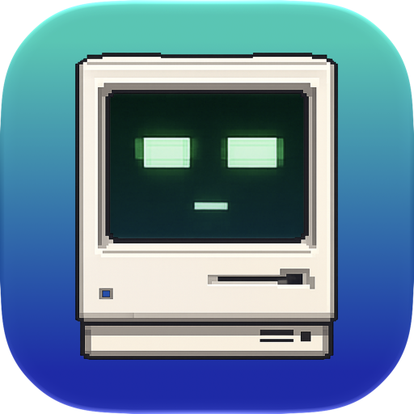
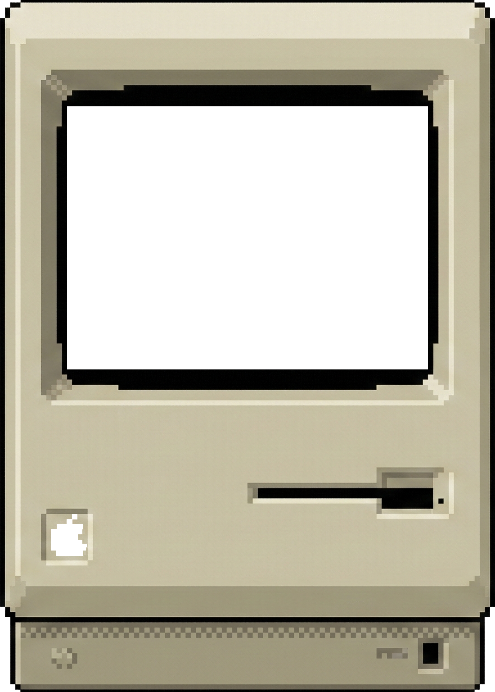
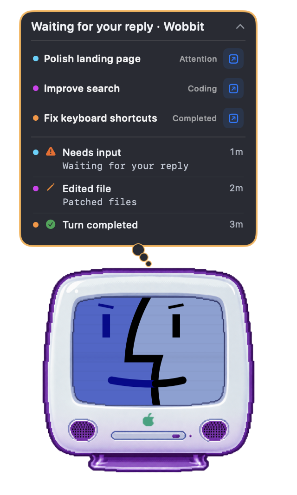
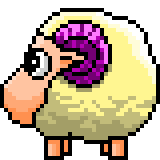
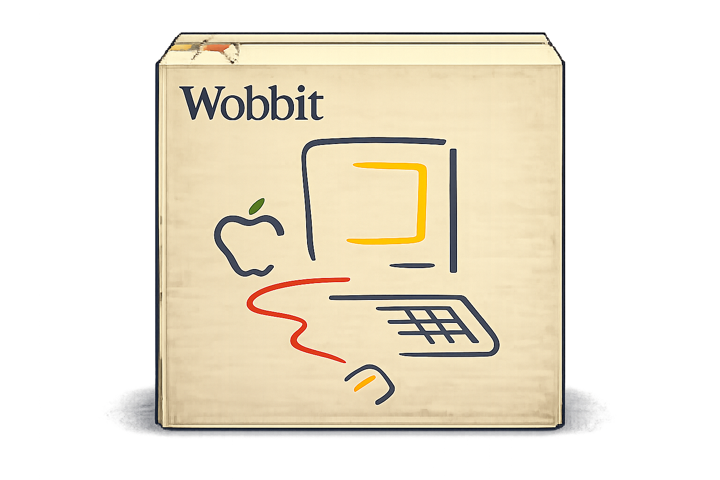

Know which session needs you.
Session names and matching colored dots help you follow concurrent work. Expand a bubble to see recent activity, questions, and approval requests when your agent provides them.

WobbitA companion for coding agents
Wobbit gives every coding agent its own tiny desktop companion. See who’s working, who’s waiting, and who needs you—at a glance.
Free · macOS 15+ · Apple silicon & Intel
Developer ID signed · Notarized by Apple
How it works
Each coding agent gets a companion. Its sessions gather inside, with a clear signal when work is underway, finished, or waiting on you.
Free · macOS 15+ · Apple silicon & Intel
The useful little details
You don’t check Wobbit the way you check a dashboard. You notice it the way you notice a desk clock, or someone pacing while they think.
Session names and matching colored dots help you follow concurrent work. Expand a bubble to see recent activity, questions, and approval requests when your agent provides them.
Use the bubble’s shortcut to return to supported conversations or apps, while work is happening or when it finishes. Less window hunting, more getting on with it.
Choose optional sound alerts for finished turns, permissions, questions, and blocked sessions. Adjust size, motion, and visibility.

Works with
Wobbit follows activity available on your Mac. Pick the providers you use and give each its own spot on your desktop.
SUPPORTED
SUPPORTED
SUPPORTED
SUPPORTED
Agent activity is read and processed locally. No Wobbit account, no provider passwords or API keys, and no session uploads. Update checks connect to GitHub. Read about privacy.
What’s new
Before you take one home
Download the ZIP, unzip it, and open Wobbit. If macOS asks you to confirm opening an app downloaded from the internet, choose Open. The app then helps you move it to Applications on first launch. Follow onboarding to connect the coding agents you use. About opening downloaded apps.
Wobbit requires macOS 15 Sequoia or later. One download supports both Apple silicon and Intel Macs.
Yes, Wobbit is currently free, and no Wobbit account or API key is required. It reads activity from the coding agents you already have installed and use on your Mac. If paid features are ever introduced, their price and terms will be shown before purchase.
Wobbit needs access to local provider folders to read session activity. Onboarding guides you through selecting the relevant folders. Claude Code can also use local hooks for real-time signals.
Depending on the provider, Wobbit may read local transcript content, tool calls, and message snippets to work out what a session is doing and show context in its bubble. That processing stays on your Mac; Wobbit does not upload your sessions to a developer-operated server. Read the privacy policy.
The available details depend on the provider’s local activity. Codex, Claude Code, and Cursor can gather multiple sessions. Antigravity provides local activity and status signals. Shortcuts open a specific conversation when available, or the related app.
Wobbit includes an updater. You can configure automatic update checks or check manually in Settings → General. Downloads come from Wobbit’s GitHub releases.
If you installed Claude Code hooks, open Settings → Providers → Claude Code and choose Remove Hooks first. Turn off Start at Login in General settings, quit Wobbit, then move Wobbit from Applications to the Trash. Your coding-agent conversations remain in their provider folders. Some Wobbit preferences may remain on your Mac.
Wobbit is signed with the developer’s Apple Developer ID and submitted to Apple’s notarization service, which checks for known malicious software. macOS can verify the developer and notarization when you open it. Notarization is a security check, not an Apple endorsement. Learn more from Apple.
Wobbit borrows from a time when computers felt like objects with personality: warm beige plastic, translucent colors, blinking cursors, and friendly faces that made an unfamiliar machine feel approachable.
It also owes something to desktop toys and screen mates—tiny sheep, pets, and odd little creatures that wandered around your desktop. Wobbit keeps that sense of presence and gives it a modern job: making your coding agents visible at a glance.

Available now
Pick a face. Give it a corner of your desktop.
Let your agents get on with their day.

Download for macOSFree · macOS 15+ · Apple silicon & Intel
Developer ID signed · Notarized by Apple